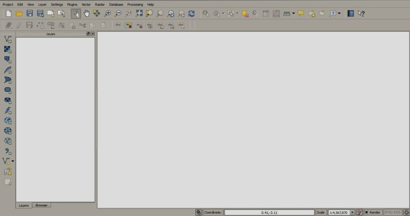

1. Installation in Windows 32 bit¶
1.1. QGIS download and installation¶
- Download the latest QGIS version 32 bit from here (the direct download of QGIS 2.2 from this link);
- Execute the QGIS installer with administrative rights, accepting the default configuration.
Now, QGIS 2 is installed.
1.2. Semi-Automatic Classification Plugin installation¶
- Run QGIS 2;
- From the main menu, select Plugins > Manage and Install Plugins;
- From the All menu, select the Semi-Automatic Classification Plugin and click the button Install plugin;
- The plugin should be automatically activated; however, be sure that the Semi-Automatic Classification Plugin and Processing are checked in the Installed menu;

1.3. Configuration of the Processing plugin¶
This configuration is required because SAGA GIS needs to be activated in the Processing framework of QGIS 2.
- Select the menu Processing > Options and configuration; click the + symbol beside Providers;

- Click the + symbol beside Providers, and click the symbol + beside SAGA;

- SAGA should be already configured. However, verify the following settings:
The checkbox Activate is checked;
Important! Because SAGA 2.0.8 was installed, the checkbox Enable SAGA 2.0.8 compatibility must be checked; if SAGA 2.1.0 was installed then it must be unchecked;
The path in SAGA folder points to:
C:/PROGRA~2/QGISVA~1/apps\saga
Now, the Semi-Automatic Classification Plugin is installed and configured. The plugin is available under the Raster menu of QGIS, or you can click the icon in the main interface (if the raster menu is activated).